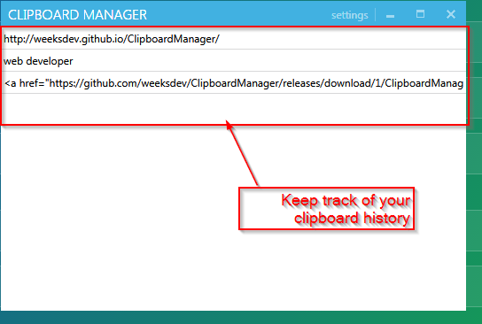
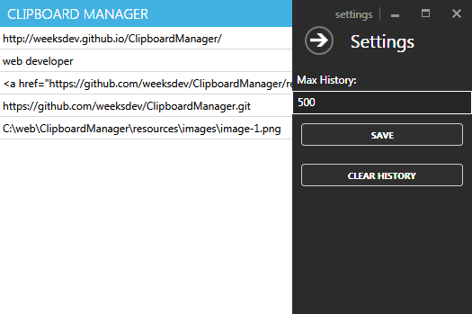
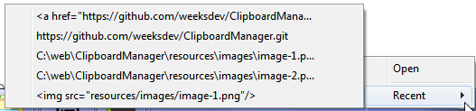

ClipboardManager
A utility to keep track of your clipboard activity.
Ever wish you could retrieve something from your clipboard you copy/pasted a couple minutes ago? This is your application.
Features
- simple interface to keep track of your clipboard history
- quick view of the last 5 items in your clipboard available from your taskbar
- ability to modify the length of history kept
- modern design
Screenshots
  Upcoming Features
- Export your history to csv/excel
- Automatically save your history to file or sqlite db for storage
Open-Source
- If you'd like to contribute feel free to send a pull-request.